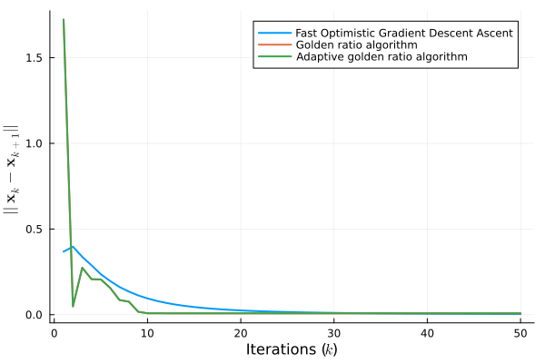

Linear-Quadratic Dynamic Game
As shown in Proposition 2 in [4], the receding horizon open-loop Nash equilibria (NE) can be reformulated as a non-symmetric variational inequality. Specifically, consider a set of agents $\mathcal{N} = \{1,\dots,N\}$ characterizing a state vector $\mathbf{x}[t] \in \mathbb{R}^n$, whose (linear) dynamics is described as
\[\begin{equation} \mathbf{x}[t+1] = \mathbf{A}\mathbf{x}[t] + \sum_{i \in \mathcal{N}} \mathbf{B}_i \mathbf{u}_i[t] \end{equation}\]
for $t = 1, \dots, T$. Each agent $i$ selfishly tries to choose $\mathbf{u}_i[t] \in \mathbb{R}^m$ in order to minimize the following cost function
\[\begin{equation} J_i(\mathbf{u}_i|\mathbf{x}_0, \mathbf{u}_{-i}) = \frac{1}{2}\sum_{t=0}^{T-1} \|\mathbf{x}[t|\mathbf{x}_0, \mathbf{u}]\|^2_{\mathbf{Q}_i} + \|\mathbf{u}_i[t] \|^2_{\mathbf{R}_i} \end{equation}\]
for some $0 \preceq \mathbf{Q}_i \in \mathbb{R}^{n \times n}$ and $0 \prec \mathbf{R}_i \in \mathbb{R}^{m \times m}$, with $\mathbf{u}_{-i} = \text{col}(\mathbf{u}_j)_{j \in \mathcal{N}\setminus \{i\}}$ and $\mathbf{u}_j = \text{col}(\mathbf{u}_j[t])_{t=1}^T$. Moreover, $\mathbf{u} = \text{col}(\mathbf{u}_i)_{i \in \mathcal{N}}$. The set of feasible inputs, for each agent $i \in \mathcal{N}$, is $\mathcal{U}_i(\mathbf{x}_0,\mathbf{u}_{-i}) := \{\mathbf{u}_i \in \mathbb{R}^{mT} : \mathbf{u}_i[t] \in \mathcal{U}_i(\mathbf{u}_{-i}[t]), \ \forall t = 0,\dots,T-1; \ \mathbf{x}[t|\mathbf{x}_0, \mathbf{u}] \in \mathcal{X}, \ \forall t = 1,\dots,T\}$, where $\mathcal{X} \in \mathbb{R}^n$ is the set of feasible system states. Finally, $\mathcal{U}(\mathbf{x}_0) = \{\mathbf{u} \in \mathbb{R}^{mTN}: \mathbf{u}_i \in \mathcal{U}(\mathbf{x}_0,\mathbf{u}_{-i}), \ \forall i \in \mathcal{N}\}$. Following [4, Def. 1], the sequence of input $\mathbf{u}^*_i \in \mathcal{U}_i(\mathbf{x}_0,\mathbf{u}_{-i})$, for all $i \in \mathcal{N}$, characterizes an open-loop NE iff
\[\begin{equation} J(\mathbf{u}^*_i|\mathbf{x}_0,\mathbf{u}^*_{-i}) \leq \inf_{\mathbf{u}_i \in \mathcal{U}_i(\mathbf{x}_0, \mathbf{u}^*_{-i})}\left\{ J(\mathbf{u}^*_i|\mathbf{x}_0,\mathbf{u}_{-i}) \right\} \end{equation}\]
which is satisfied by the fixed-point of the best response mapping of each agent, defined as
\[\begin{equation} \mathbf{u}^*_i = \underset{ {\mathbf{u}_i \in \mathcal{U}(\mathbf{x}_0,\mathbf{u}^*_{-i})} }{ \text{argmin} } J_i(\mathbf{u}_i|\mathbf{x}_0, \mathbf{u}^*_{-i}), \quad \forall i \in \mathcal{N} \end{equation}\]
[4, Prop. 1] states that any solution of the canonical VI is a solution for $(4)$ when $\mathcal{S} = \mathcal{U}(\mathbf{x}_0)$ and $F : \mathbb{R}^{mTN} \to \mathbb{R}^{mTN}$, defined as
\[\begin{equation} F(\mathbf{u}) = \text{col}(\mathbf{G}^\top_i \bar{\mathbf{Q}}_i)_{i \in \mathcal{N}} (\text{row}(\mathbf{G}_i)_{i \in \mathcal{N}}\mathbf{u} + \mathbf{H} \mathbf{x}_0) + \text{blkdiag}(\mathbf{I}_T \otimes \mathbf{R}_i)_{i \in \mathcal{N}} \mathbf{u} \end{equation}\]
where, for all $i \in \mathcal{N}$, $\bar{\mathbf{Q}}_i = \text{blkdiag}(\mathbf{I}_{T-1} \otimes \mathbf{Q}_i, \mathbf{P}_i)$, $\mathbf{G}_i = \mathbf{e}^\top_{1,T} \otimes \text{col}(\mathbf{A}^t_i \mathbf{B}_i)_{t=0}^{T-1} + \mathbf{I}_T \otimes \mathbf{B}_i$ and $\mathbf{H} = \text{col}(\mathbf{A}^t)_{t = 1}^T$. Matrix $\mathbf{P}_i$ results from the open-loop NE feedback synthesis as discussed in [4, Eq. 6].
using Random, LinearAlgebra
using Monviso, BlockDiagonals
Random.seed!(2024)
⊗(X, Y) = kron(X, Y)
e(N, i) = I(N)[:,i]
n, m, N, T = 13, 4, 5, 3
A = rand(n, n)
Bs = [rand(n, m) for _ in 1:N]
Qs = [let Q = rand(n, n); Q * Q'; end for _ in 1:N]
Rs = [let R = rand(m, m); R * R'; end for _ in 1:N]
P = rand(n, n)
Q̄s = [BlockDiagonal([I(T - 1) ⊗ Q, P]) for Q in Qs]
Gs = [I(T) ⊗ B + e(T, 2)' ⊗ mapreduce(t -> A^t * B, vcat, 0:T-1) for B in Bs]
H = mapreduce(t -> A^t, vcat, 1:T)
x0 = rand(n)Let's define the mapping $\mathbf{F}(\cdot)$ and the constraints set $\mathcal{S}$
using JuMP, Clarabel
# Define the mapping
F1 = mapreduce((G, Q̄) -> G' * Q̄, vcat, Gs, Q̄s)
F2 = reduce(hcat, Gs)
F3 = BlockDiagonal(map(R -> I(T) ⊗ R, Rs))
F(u) = F1 * (F2 * u + H * x0) + F3 * u
L = norm(F1 * F2 + F3) + 1
# Define a constraints set for the collective input
model = Model(Clarabel.Optimizer)
set_silent(model)
y = @variable(model, [1:(m * T * N)])
@constraint(model, y >= 0)Then, we can initialize the VI and an initial solution
# Define the VI and the initial(s) points
vi = VI(F; y=y, model=model)
u = rand(m * T * N)We can use and compare different algorithms; e.g., fast optimistic gradient descent-ascent (Monviso.fogda), golden ratio (Monviso.graal), adaptive golden ratio (Monviso.agraal)
GOLDEN_RATIO = 0.5(1 + sqrt(5))
max_iter = 50
residuals = (
fogda = Vector{Float32}(undef, max_iter),
graal = Vector{Float32}(undef, max_iter),
agraal = Vector{Float32}(undef, max_iter)
)
# Initial solution and iterative process
let sol_fogda = (xk = u, x1k = u, y1k = u),
sol_graal = (xk = u, yk = u),
sol_agraal = (xk = u, x1k = rand(m*T*N), yk = u, s1k = GOLDEN_RATIO/(2L), tk = 1)
for k in 1:max_iter
# Fast Optimistic Gradient Descent Ascent
xk1, yk = fogda(vi, sol_fogda..., k, 1/(4L))
residuals.fogda[k] = norm(xk1 - sol_fogda.xk)
sol_fogda = (xk = xk1, x1k = sol_fogda.xk, y1k = yk)
# Golden ratio algorithm
xk1, yk1 = graal(vi, sol_graal..., GOLDEN_RATIO/(2L))
residuals.graal[k] = norm(xk1 - sol_graal.xk)
sol_graal = (xk = xk1, yk = yk1)
# Adaptive golden ratio algorithm
xk1, yk1, sk, tk1 = agraal(vi, sol_agraal...)
residuals.agraal[k] = norm(xk1 - sol_agraal.xk)
sol_agraal = (xk = xk1, x1k = sol_agraal.xk, y1k = yk1, s1k = sk, tk = tk1)
end
endThe API docs have some detail on the convention for naming iterative steps. Let's check out the residuals for each method.
using Plots, LaTeXStrings
plot(
1:max_iter, [residuals.fogda, residuals.graal, residuals.agraal];
xlabel=L"Iterations ($k$)",
ylabel=L"$||\mathbf{x}_k - \mathbf{x}_{k+1}||$",
labels=[
"Fast Optimistic Gradient Descent Ascent"
"Golden ratio algorithm"
"Adaptive golden ratio algorithm"
] |> permutedims,
linewidth=2
)